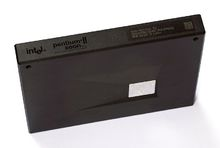
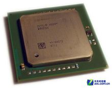
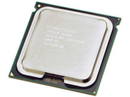
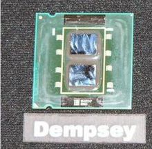
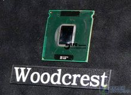

英特尔® 至强™处理器
查看百科至强Xeon是英特尔生产的微处理器，它用于"中间范围"的企业服务器和工作站。在英特尔的服务器主板上，最多达八个Xeon处理器能够共用100MHz的总线而进行多路处理。Xeon设计用于因特网以及大量的数据处理服务，例如工程、图像和多媒体等需要快速传送大量数据的应用。
基于奔腾微处理器P6构架，它被设计成与新的快速外围元件互连线以及加速图形端口一起工作。Xeon具有：512千字节或1兆字节，400MHz的高速缓冲存储器、在处理器、RAM和I/O器件之间传递数据的高速总线、能提供36位地址的扩展服务器内存结构。
Xeon 是作为Intel的服务器。Intel处理器基本已经形成如下格局：服务器Xeon，高端core i9/i7，中端Core i5/Core i3/Pentium，低端Celeron。其中Xeon可以使用多处理器技术。
- 2001年英特尔发布了Xeon处理器。英特尔将Xeon的前面去掉了Pentium的名号，并不是说就与x86脱离了关系，而是更加明晰品牌概念。Xeon处理器的市场定位也更加瞄准高性能、均衡负载、多路对称处理等特性，而这些是台式电脑的Pentium品牌所不具备的。Xeon处理器实际上还是基于Pentium 4的内核，而且同样是64位的数据带宽，但由于其利用了与AGP 4X相同的原理－－“四倍速”技术，因此其前端总线有了巨大的提升，表现更是远胜过Pentium Ⅲ Xeon处理器。Xeon处理器基于英特尔的NetBurst架构，有更高级的网络功能，及更复杂更的3D图形性能，另一方面，支持至强的芯片组也在并行运算、支持高性能I/O子系统（如SCSI磁盘阵列、千兆网络接口）、支持PCI总线分段等方面更好地支持服务器端的运算。
- Prestonia是Xeon处理器的第二代核心，Prestonia同第一代的Foster核心之间的首要区别就是整合的二级缓存容量的差别，前者为512KB，而后者仅为256KB。Prestonia核心处理器也采用了先进的0.13微米制造工艺。但是Prestonia核心最大的优势就是增加了对Hyper- Threading（超线程）的支持。Hyperthreading早先称为Jackson技术，这是一种多线程（SMT Simultaneous Multi-Threading）技术的扩展，其主要功能就是让处理器在单处理器工作模式下也进行多线程工作（每块处理器可以同时进行一个以上进程的处理）。
- 这是Intel的XEON CPU核心，采用90nm制程，使用800Mhz FSB，具有16KB L1缓存、1MB L2缓存和12KB uOps Trace缓存，同时支持SSE3以及HyperThreading。对应Xeon处理器通过EM64T技术同时支持32位和64位计算，并通过集成 DBS（Demand Based Switching，基于需要切换技术）实现增强型SpeedStep技术，可以根据工作负载动态调整处理器运行频率和功耗。
- Intel Xeon 3000系列的新核心，与Intel Core 2 Duo采用相同的LGA 775针脚，而非Woodcrest所用的LGA 771针脚。Xeon 3000系列处理器运行于1066 MHz系统总线（FSB），内含4 MB或2 MB共享型二级缓存，支持Intel 64位扩展技术(Intel EM64T），Intel虚拟化技术（Intel Virtualization Technology）及Enhanced Intel SpeedStep技术，其中包括 Xeon 3040,3050,3060和3070，Intel Xeon 3070 (2.66 GHz/4MB L2/FSB1066），Intel Xeon 3060 (2.40 GHz/4MB L2/FSB1066），Intel Xeon 3050 (2.13 GHz/2MB L2/FSB1066），Intel Xeon 3040 (1.83 GHz/2MB L2/FSB1066）。其中3040和3050配备了2MB二级缓存，而3060和3070配备了4MB二级缓存。新的Xeon处理器采用了Core核心，与前代的NetBurst相比，在性能和功耗方面都有了很大的提高和改善。
- Dempsey是Xeon的双核心版本，型号命名为50xx的双核处理器，包括5030(2x2MB/2.67GHz/667 MHz前端总线/功率95W/DP）、5050(2x2MB/3.00GHz/667MHz前端总线/功率95W/DP）、5060 (2x2MB/3.20GHz/前端总线1066 MHz/功率130W/DP）、5063(2x2MB/3.20GHz/前端总线1066 MHz/功率95W/DP）、（5080 2x2MB/3.73 GHz/前端总线1066 MHz/功率130W/DP）。这些Xeon 50XX系列均为双核心，主频从2.50GHz到3.73GHz，所有处理器采用 65 纳米制造工艺，均支持FB-DIMM内存，英特尔虚拟化技术、超线程（HT）技术、增强型英特尔SpeedStep动态节能技术（其中5063、5060 不支持）、英特尔64位内存扩展技术、英特尔病毒防护技术。这些处理器均配置了4MB L2缓存，其中每个核心独享2MB L2缓存，其前端总线为1066MHz或者667MHz，可以提供8.5GB/s或者5.3GB/s的传输带宽。采用65nm工艺的双核心Xeon Dempsey使用LGA771接口。与此50XX系列配合的芯片组为INTEL 5000X，5000P，5000Z，5000V。
- 这是XEON采用Core微架构的服务器级双核心处理器，WoodCrest核心处理器包括Xeon 5110(1.6GHz/4MB L2/1066MHz FSB）、Xeon 5120(1.86GHz/4MB L2/1066MHz FSB）、Xeon 5130(2GHz/4MB L2/1333MHz FSB）、Xeon 5140(2.33GHz/4MB L2/1333MHz FSB）、Xeon 5150(2.66GHz/4MB L2/1333MHz FSB）及最高型号Xeon 5160(3GHz/4MB L2/1333MHz FSB），采用LGA 771处理器接口，全线最高功耗只有80W，对比上代Dempsey核心最高功耗可高达130W有着明显的改善，支持Intel EM64T、Intel Execute Disable Bit、Intel Virtualization Technology功能，而Demand-Based Switching功能则只提供于Xeon 5140或以上的型号。另有一款低功耗产品XEON 5148 LV，频率为2.33GHz/4MB L2 Cache/1333MHz FSB，但最高功耗只有40W，是正常型号的一半，并完全支持援Intel EM64T、Intel Execute Disable Bit、Intel Virtualization Technology功能及Demand-Based Switching功能。与此51XX系列配合的芯片组为INTEL 5000X，5000P，5000Z，5000V。